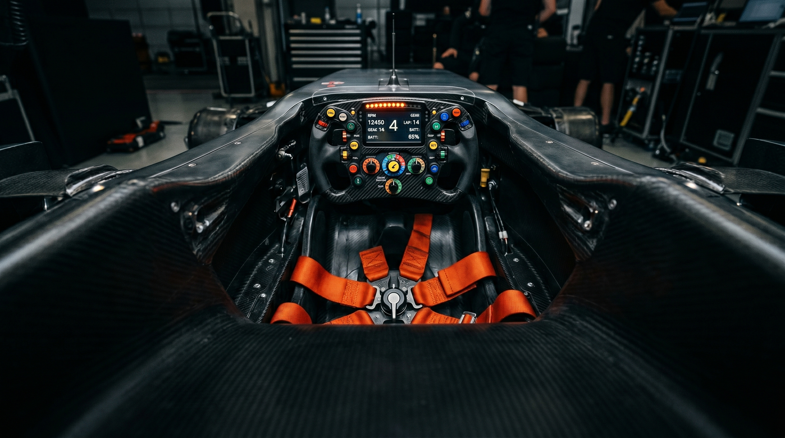
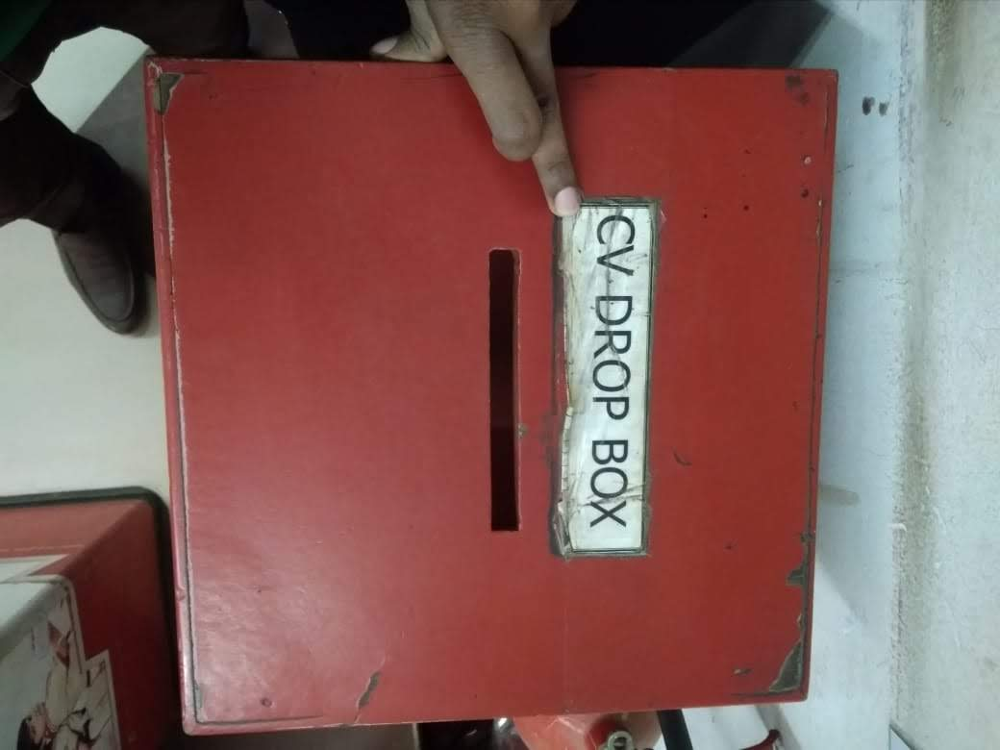
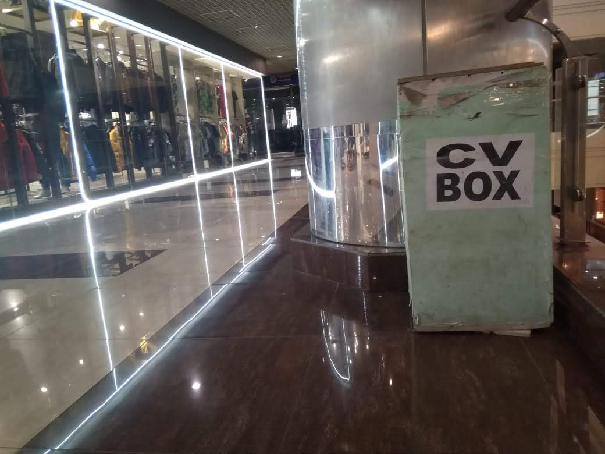
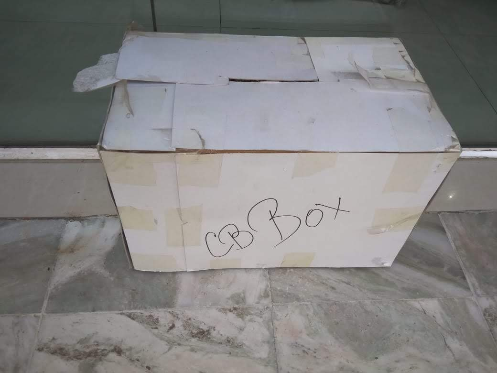
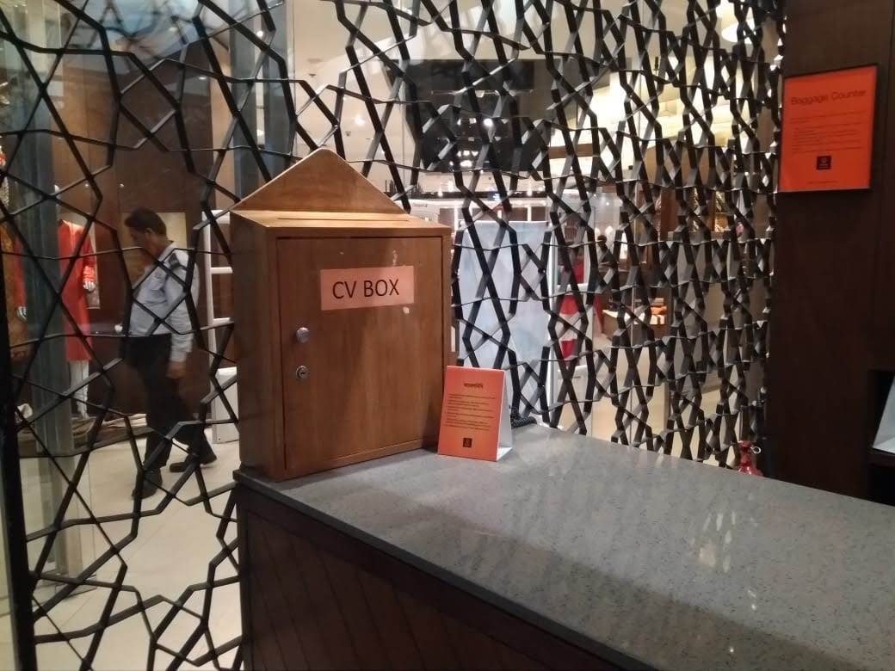
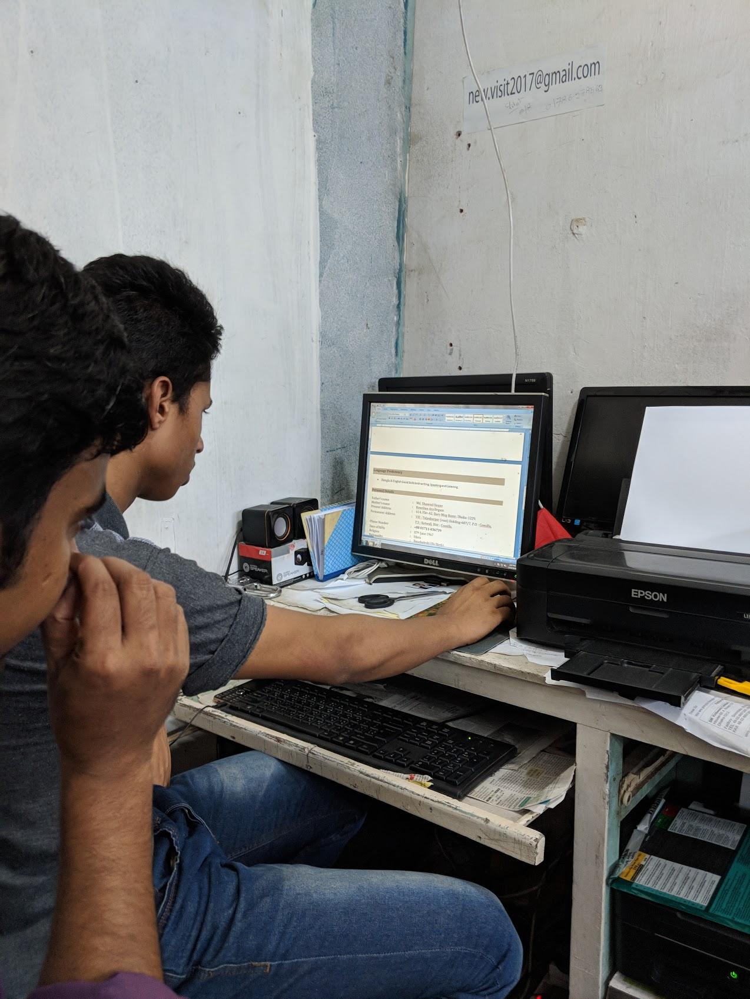

How to use agentic engineering to go from 10% to 10X more productive.
github.com/rishidean/pedal
slides.rishidean.com/getting-started
The next ninety minutes
Four chapters, one demo, and a repo you can clone.
01 · The continuum
A shared vocabulary for what we each mean by AI coding, and why the room disagrees.
18 min
02 · Getting airborne
The harness, the requirements, a live run, and where the loop goes next.
33 min
03 · Breaking atmosphere
Where the harness stops working, and what I am experimenting with.
15 min
04 · Go
What you leave with.
4 min
slides.rishidean.com/getting-started
Where the room disagrees
The discrepancy
The market can’t agree on whether AI works. Both sides are looking at the same machine.
What this answers: why 95% see nothing while a few see 10x.
slides.rishidean.com/getting-started
THE PARADOX
Two realities coexist in the world
Your company bought the tools and ran the pilots. So where are the gains?
The measured reality
95%
of businesses fail to see meaningful returns on AI.
The lived reality
10×
Solo builders ship in a week what used to take a quarter.
How can both of these be true?
Both are true. The difference is how they move, not how hard they work — that's the map, next →
slides.rishidean.com/getting-started

THE OPERATOR VS. THE TOOL
Same car. Different driver.
“AI hallucinates.” “It can't do X.” “We've seen it fail at other companies.”
Put an automatic-only driver in this car and they spin it into the wall...then tell you why it's undrivable. Put a pro in the same seat, and it's the fastest thing on Earth. Both are correct.
So the question isn’t whether the car is good. It’s how many laps you’ve driven.
slides.rishidean.com/getting-started
Why the gap persists
What sounds like rigor, is often a skills gap.
The most responsible-sounding teams are often the least practiced.
Low proficiency before the reps are in
Output disappoints a hallucination, some slop
Distrust hardens must be the tool
Confirmation bias knew I couldn't rely on it
Retreat to old ways known beats unknown
Every stage of this loop masquerades as good judgment; however it is really a signal of low proficiency + low agency. Distrust is a status report on your scaffolding.
And the hallucination fear assumes the model is always guessing...it isn't. Hold that thought.
slides.rishidean.com/getting-started
THE OPERATING MODES
"Using AI to code" is three very different crafts
VIBE CODING
Prompt and iterate.
You chat, it generates, you eyeball the result and ship. No specs, no checks, nobody reads the code.
Fine for throwaways
AI-ASSISTED
Agents write pieces; humans review.
Agents produce bounded chunks of code. A person reads every line before it lands. Quality lives in the review.
Where most teams stop
AGENTIC ENGINEERING
Build the harness that codes to spec.
You author specs and scaffolding. The system builds, verifies against acceptance criteria, and returns evidence. Quality lives in the spec.
Where the 10× live
High-leverage teams don't just use agents to code; they build systems that govern how agents code.
slides.rishidean.com/getting-started
A common language
The map
A continuum of operating modes, and where you sit on it.
What this answers: the modes of transport, and where teams really are.
slides.rishidean.com/getting-started
THE AI ADOPTION CONTINUUM
Think of AI adoption as modes of transport.
01
Walking
Chat tools
02
Biking
Autocomplete
03
Driving
Agent coding
04
Helicopter
Agent harness
05
Jet
SDLC transformation
06
Rocket
Autonomous agents
slides.rishidean.com/getting-started
THE AI ADOPTION CONTINUUM
Six ways to move. Only some leave the ground.
95% of teams live here
THE 10X LIVE HERE
GROUND AIR
01
Walking
Chat tools
02
Biking
Autocomplete
03
Driving
Agent coding
04
Helicopter
Agent harness
05
Jet
SDLC transformation
06
Rocket
Autonomous agents
Ground — same work, fasterAirborne — a different process
slides.rishidean.com/getting-started
How you operate
The shift from player, to coach, to conductor.
Autocomplete
Player
Linear. You in every step.
Agentic
Coach
Cyclical. You manage the loop.
Orchestration
Conductor
Systemic. You conduct the fleet.
slides.rishidean.com/getting-started
PLACING THE MAJORITY
We're widely still in the ground transport phase.
Driving gets you ~10–20% faster, but not the 10× solo builders see. The difference lies in the mode of transport.
01
Walking
Chat tools
02
Biking
Autocomplete
You are here ↓
03
Driving
Agent coding
04
Helicopter
Agent harness
05
Jet
SDLC transformation
06
Rocket
Autonomous agents
slides.rishidean.com/getting-started
The turn
This is organizational, not personal.
Ten people at rung four, each writing their own specs into their own repo, is still an organization at rung four.
slides.rishidean.com/getting-started
SYSTEM PHYSICS
A faster task is not a faster product
Product
→
Design
→
10× faster ✓
Build
→
the pile forms here
Review
→
Verify
Accelerate one box in isolation, and the work piles up at the next boundary.
slides.rishidean.com/getting-started
SYSTEM PHYSICS
The bottleneck moved. The system didn't.
Product
→
Design
→
Build
→
Review
→
Verify
Specs still take weeks
Screens still take a month
10× more code output
…becomes a backlog of code reviews
…and QA buried in manual test passes
Local speed is not system throughput.
Faster individuals create more review, more rework, more undecided work in flight. The team is the unit of change.
Buys the tools. Rolls them out. Provides foundation & infra
Helicopter
Engineering
The people who write the code. The org can't get airborne until we do.
Jet → Rocket
CTO / CEO
System-wide change — but only after Helicopter is proven.
slides.rishidean.com/getting-started
What you'll walk away with
Get airborne.
By the end of this deck you'll understand a multi-sprint, self-verifying, autonomous development loop...and the means to run it yourself.
That system is the harness in the session title: the structure around the model that turns “an AI that can code” into a system that builds software.
slides.rishidean.com/getting-started
The jump we make today
From using agents to code, to building agents that code.
That's the ground-to-air jump — a different process, not a faster tool. The keynote drew the map. Today we fly the first leg.
slides.rishidean.com/getting-started
WHERE THE INTELLIGENCE LIVES
We're shifting the burden from the model to specification & scaffolding.
Model
The engine
Raw capability. Necessary, but the part everyone talks about.
+
Files
The judgment
Standards, specs, and memory. Where your engineering lives.
+
Loop
The discipline
Build, verify, document (repeat until done).
Take any one away and it stops working. And most of what makes it good isn't the model. It's the files (and what we'll cover in the rest of this deck.)
slides.rishidean.com/getting-started
THE OPEN SECRET
Agentic Orchestration is a fancy term, for some files + a loop.
slides.rishidean.com/getting-started
How the harness works
The double loop
Some files and a bash script. We'll take it apart piece by piece, and then watch it build an app, unattended.
What this answers: what the system is, and how it runs unattended.
slides.rishidean.com/getting-started
WHAT WE MEAN BY AGENTIC
We're going to orchestrate the model to run in a loop.
Many are still thinking about "autocomplete", but they're very different.
→It isn't — a turn
○Autocomplete on steroids
○A chatbot you babysit turn by turn
○“AI that writes code for you,” one prompt at a time
↻It is — a loop
●Sets its own intermediate steps
●Calls tools to act, not just answer
●Checks its own work
●Loops until the goal is met
slides.rishidean.com/getting-started
THE TOPOLOGY
One loop inside another.
The outer loop marches through sprints with a fresh brain each time. The inner loop is one session: build → verify → document.
✕ “create a component” ✓ “src/ride/RideRequest.tsx”
Make it checkable
✕ “works correctly” ✓ “typecheck passes”
IN THE KIT
A skill drafts these from your sprint spec. Your review is the work.
Small enough to build and verify in one pass; the commit format makes the git log the ledger.
slides.rishidean.com/getting-started
THE SYSTEM
Now, it's time to build.
Stage 2 / 3 · Actors
Why next: someone has to do the work — and check it.
Setup
What it knows
●Tech Lead
●PM
●Design
●QA Lead
Actors
Who does the work
●The Builder
●QA Team (x3)
●QA Manager
Orchestrator
What keeps it moving
●Eng Manager
●PM
slides.rishidean.com/getting-started
THE BUILDER
builder · sprint session
$ claude -p "$(cat prompt.md)"
reading context…
building feature…
writing index.html
Executes the spec for a single feature / sprint. Then done.
The Builder is just a Claude Code session — no special framework, no persistent agent. Spun up fresh for one sprint, then thrown away. Its power is that nothing carries over.
Stateless
Clean brain every turn — no context rot from the last sprint.
Self-checking
It calls run-qa on its own work before it ever declares done.
Hands off
Writes its memory to PROGRESS.md so the next session can pick up.
slides.rishidean.com/getting-started
THE QUALITY TEAM
Each team member has a very specific job.
.claude/agents/They check, they don't build — cheaper, faster models.
This is the scaffolding that earns the trust — the answer to the doubt loop from Part 1.
Every verdict is a contract — GREEN / RED · CRITICAL / WARN / NIT — a shape the next step consumes, never prose.
Judgment · latentvsVerification · anchoredTwo anchors and one opinion — lint and tests are deterministic; the reviewer is a fresh-context judgment, and the anchors outrank it.
{ }
Linter
haiku
Formatting & style.
name: linter
tools: Bash, Read, Edit
model: haiku
---
1. npm run typecheck
2. npm run lint
3. auto-fix trivial only
→ LINTER: GREEN | RED
.claude/agents/linter.md
✓
Code reviewer
sonnet
Bugs & security — read-only.
name: code-reviewer
tools: Read, Grep, Glob
---
Review vs the invariants
BR-007 · BR-008 · BR-016
boundary: no network, no random
→ CRITICAL / WARN / NIT
.claude/agents/code-reviewer.md
▶
E2E tester
sonnet
Behavior & acceptance criteria.
name: playwright-tester
tools: Read, Write, Bash
---
Author + run e2e vs criteria
matching assigns exactly once
state survives refresh
→ "GREEN" or "RED" + details
.claude/agents/playwright-tester.md
slides.rishidean.com/getting-started
THE INNER LOOP
RED doesn't stop the loop — it routes back to the Builder.
On RED, the verdict carries the actual failures — the Builder reads them, patches, and re-runs. Three attempts, then it stops. RED isn't an opinion — it's a failed assertion; the fix targets a fact, not a feeling.
RED → read failures · fix · re-run
The Builder
Write & fix
Builds the feature. On a RED return, reads the failures and patches the code.
→
run-qa
Verify
Lint · review · test. Returns one verdict — and the failures with it.
→
REDloops back ↑
GREENexits → Document
Three attempts, then it stops. Still RED after the third try → mark the sprint [!] blocked and hand back to a human. Autonomous, never infinite.
slides.rishidean.com/getting-started
THE SYSTEM
Close the sprint, and move to the next.
Stage 3 / 3 · Orchestrator
Why last: something has to keep the sprints moving, hands-free.
Setup
What it knows
●Tech Lead
●PM
●Design
●QA Lead
Actors
Who does the work
●The Builder
●QA Team (x3)
●QA Manager
Orchestrator
What keeps it moving
●Eng Manager
●PM
slides.rishidean.com/getting-started
KNOWLEDGE HANDOFF
On GREEN, the session writes itself down.
QA GREEN→three writes — roadmap = state · PROGRESS = memory · CLAUDE = learning
## Sprint 3
scaled hire cost.
spend bug → fixed
(guard the spend)
03CLAUDE.md
Promote durable learnings to permanent context.
Learning
## Gotchas
+ score must never go
+ negative — guard spend
A deliberate simplification. In production this handoff is a context-management system writing to several stores — here it’s one file per job, so you can read the whole mechanism in one sitting.
slides.rishidean.com/getting-started
THE ORCHESTRATORrun.sh
Ten lines. Dead simple by design.
#!/usr/bin/env bash
set -euo pipefail
MAX=4; n=0
while grep -q '🔲' docs/Roadmap.md && (( n < MAX )); do
PLACEHOLDER — record the PEDAL proving run (GIF / MP4 frame): Booking S2 planted bug, RED → GREEN
slides.rishidean.com/getting-started
DEBRIEF
What just happened.
01
Stateless sessions, real progress.Continuity came from the files, not memory.
02
The gate caught a real bug.S2's matching timer assigned twice; the tester caught it, the Builder fixed it. The loop found it - not a model, nor a human.
03
Three sprints, zero keystrokes.You wrote specs; it wrote, tested, fixed, and documented.
The keynote’s thesis, running: specs made intent executable; the gate kept execution governed.
slides.rishidean.com/getting-started
Where it goes next
Helicopter optimizes one product. Jet optimizes the team.
Same harness, same files. What changes is the unit of leverage.
What this answers: what happens when it stops being just you?
slides.rishidean.com/getting-started
Watch it grow
The loop is the smallest graph that still works.
generatesanchorsgatesstate
click to advance
slides.rishidean.com/getting-started
THE CAPABILITY LADDERHELICOPTER → JET → SPACESHIP
Same craft. Three altitudes.
04 · What we covered
Helicopter
05 · How we get there
Jet
06 · Where we go next
Spaceship
Context
One CLAUDE.md + one PROGRESS.md
Layered & indexed, shared by the fleet
Compiles and maintains itself
Execution
Sequential — one sprint at a time
Parallel — fan out, reduce, verify, synthesize
Self-routing — rule, nudge, or cold model
Verification
One QA gate per sprint
A fresh-context verifier on every edge
Equivalence checks graduate rules
Memory
State lives in files, per repo
Shared state + indexes across builders
Stable patterns compile out as rules
Cost
Full price, every run
Tiered — cheap nodes, strong judgment
Compiled paths run free
Control flow
You write the loop
You + the model draw the graph
The system draws its own
slides.rishidean.com/getting-started
Chapter three
The Kármán line
One hundred kilometres up, the air runs out. Wings stop working, flying becomes orbiting, and staying up takes a different kind of craft.
What this answers: what is still broken once you are airborne?
slides.rishidean.com/getting-started
Where we left offEscape Velocity
The harness, in one breath.
You
Directive
"Build the reporting endpoint." An outcome, not keystrokes.
→
The harness
Context · Tools · Loop
Feeds the model what it needs, hands it tools, runs build → verify → document, and checks the work.
→
Out the other side
Working code
Reviewed, tested, shipped — while you steer the next thing.
A harness is the structure around the model that turns "an AI that can code" into "a system that builds software." We just built one. Now we teach it to remember.
slides.rishidean.com/getting-started
What flying costs
Flying is great, but jet fuel is expensive
The bill scales with your success — a story from Dhaka about the cases flying still can't solve, and where we actually need to go.
A story from Dhaka, and the bill that comes with it.
slides.rishidean.com/getting-started
The Dhaka problem
Dhaka, 2019.
Where this story starts.
Dhaka, Bangladesh
slides.rishidean.com/getting-started
The Dhaka problem · what we learnedEscape Velocity
This is how you applied for a job.

CV drop box

Mall pillar

Cardboard, taped

Behind the counter
You printed a CV, found a box, and dropped it in. A red drop box, a taped cardboard one, a wooden one behind a mall counter.
slides.rishidean.com/getting-started
The Dhaka problem · the insightEscape Velocity

The insight: a CV is just input.
Issue
Paper, at scale. Thousands of CVs in boxes; no structure, no search, no way to match a person to a job.
Insight
A CV is unstructured input. Parse it into a structured profile, and the whole market opens up.
Product
Scan or build your CV in Kormo; the parser turns paper into a profile. Jobs find you.
So we built the parser. The boxes became searchable profiles, and jobs started finding people. It worked — to a point.
slides.rishidean.com/getting-started
The Dhaka problem · to a pointEscape Velocity
Kormo · Build CV, live in app
The parser assumed every CV looked one way.
Real CVs in Dhaka didn't. Every mismatch became another special case — and the special cases never stopped. The software assumed it knew you, and asked you to bend.
This is the wound: prescriptive software, written once, for a world that won't hold still.
slides.rishidean.com/getting-started
The Dhaka problem · even todayEscape Velocity
Build it today, and you'd still be stuck.
Put a modern agent on it — airborne mode, the harness from the recap. Parts get better: the model reads messy CVs a rules engine never could. But it still guesses from scratch every time, forgets between sessions, and can't show its work. Same wound, better model.
slides.rishidean.com/getting-started
Why airborne isn't enoughEscape Velocity
Three cracks in airborne-only.
01 · Memory
It never learns
Every session starts cold; corrections evaporate. The system is smart, but no smarter on day 100 than day 1.
02 · Observability
Can't audit a guess
No single front door. You can't reproduce, verify, or trust what you can't see it do.
03 · Cost
Full price, every time
Every action hits the model. Cost scales with usage; usage is exponential. You're penalized for success.
slides.rishidean.com/getting-started
The cost crack · day 100Escape Velocity
Same exponential usage. Two very different bills.
Airborne · cost tracks usageAdaptive · where we're going
Airborne pays the model full price for every action, forever; cost rides the usage curve.
The Day 100 Problem: the system is as slow and expensive on day 100 as on day 1, because it learned nothing structural. The pink line is a different machine: it pays only for what's new. A pattern costs model calls until it's learned; repeating it is free.
You can't draw the pink line from the air. Building the machine that draws it is the rest of this talk.
slides.rishidean.com/getting-started
Where we actually need to goEscape Velocity
The last one isn't air. It's orbit.
95% of teams live here
Ground — using agents to code
The 10× live here
Air — building agents that code
The frontier
Orbit — adaptive software
01
Walking
Manual
02
Biking
Autocomplete
03
Driving
Agent coding
04
Helicopter
Agent harness
05
Jet
Agent swarms
06
Spaceship
Self-writing
Adaptive software, precisely: software that observes how it's used, remembers what it learns, and compiles stable behavior into real code. Call it adaptive, self-maintaining, or self-writing — same craft. Building one is the rest of this talk.
slides.rishidean.com/getting-started
The model, in one picture
Every path starts as a guess and earns its way to a rule.
The first time is expensive; the thousandth time is free.
slides.rishidean.com/getting-started
To reach orbitEscape Velocity
What a self-maintaining system needs.
01
Heals crack 01 · memory
Remember
A place to keep what it learns — knowledge sorted by how fast it changes, so it can be edited, audited, and trusted.
02
Heals crack 02 · observability
Observe
One front door for every action, so the system can watch the user work — every decision logged, replayable, auditable.
03
Heals crack 03 · cost
Compile
A way to graduate repeated, confirmed behavior — measured against a stability threshold — out of the model into fast, free, deterministic code.
One need per crack, one invention per need: layered context to remember, the pipeline to observe, progressive determinism to compile.
slides.rishidean.com/getting-started
How the system runs
The three inventions
Layered context, the execution pipeline, and progressive determinism: the machinery that makes it real.
Three pieces. Nothing else is required.
slides.rishidean.com/getting-started
Invention 1 · the navigation systemEscape Velocity
Layered context: four layers of memory, at four densities.
What
Ontology
The world model: the objects, their shapes, what operations are legal. The physics of the agent's world.e.g. a trip = origin + destination + time
Crystallized · schema
Why
Character
Identity, norms, guardrails. What makes the same world model feel like a chief of staff vs. a code reviewer.e.g. never book without confirming
Solid · config
How
Workflow
The active process: what's legal and what's preferred right now. "Let's plan" vs. "just do it" selects one.e.g. planning mode vs. booking mode
Fluid · process
Who
Memory
This user, right now: a living model of their intent, not a vector store of old chats.e.g. home: SF → nearest_major_airport = SFO
Volatile · retrieved
Stop writing specs for humans. This machine-readable corpus is the source of truth: solid at the top, molten at the bottom.
slides.rishidean.com/getting-started
Invention 2 · the flight computerEscape Velocity
The execution pipeline: one door, three routes, one writer.
The resolver's choice is just memory: a compiled rule if one exists, a nudged guess if a pattern is forming, a cold guess if it's brand new. Every directive enters one door and exits through one writer — you can only adapt to behavior you can see.
slides.rishidean.com/getting-started
Invention 3 · the autopilot that writes itselfEscape Velocity
Progressive determinism.
01Unknownnever seen it
02AI-Mediatedthe model guesses cold
03Observedsame guess, confirmed — the system is counting
04Compileda rule answers · no model
05 · frontierSpawnedinvents a new capability
Pink = live in the harness today · hatched = the frontier, not yet built
User behavior is the source code; the learning loop is the compiler. A pattern only crosses the gate when it's repeated, confirmed, and stable past a threshold: the system earns its own determinism.
slides.rishidean.com/getting-started
One loopEscape Velocity
The air loop runs. The orbit loop closes.
Air · the harness loop
Build → verify → document
Fast, tireless — and amnesiac. Every run starts cold, corrections die with the session, and the 401st request costs exactly what the 1st did.
Orbit · the flywheel
Observe → nudge → compile → free
Every run teaches the next. Corrections accumulate, stable patterns leave the loop as hard code, and the model stays aimed at whatever is still unknown.
Same harness underneath. The difference is the loop feeds back into itself: the pipeline observes → context remembers and nudges the next guess → determinism compiles → the pipeline runs faster → the model is freed for new unknowns.
slides.rishidean.com/getting-started
The frontier · where we standEscape Velocity
We're in orbit. Not at warp.
We're in space — but we're Apollo, not the Enterprise. Compiling rules out of behavior is the first step. The goal is a system that autonomously authors and deploys new code paths — capabilities nobody specced. We haven't figured out exactly how to do that yet. We will.
slides.rishidean.com/getting-started
Built vs. visionEscape Velocity
What's flown, and what hasn't.
Three capabilities, one lifecycle: the same five stages from the autopilot slide, grouped by what they do.
Live
TEACH
The soft path: your corrections sweep into context and nudge the next guess. (Stages 02–03 · AI-Mediated → Observed)
Live
COMPILE
The graduation gate: stable patterns become hard rules that skip the model. (Stage 04 · Compiled)
Not yet
SPAWN
The system generating new capabilities from observed workflows. (Stage 05 · the frontier)
slides.rishidean.com/getting-started
SPAWN · the true spaceshipEscape Velocity
When the system creates features nobody specced.
The sweep finds the residue COMPILE can't absorb — corrections that cluster but fit no single rule. A detector reads it for a missing capability, backtests against logged history, writes a feature spec, hands it to a coding agent, and opens a PR for you to review.
The graduation gate, one level up: a backtest replaces the equivalence check, human approval replaces the stability counter. Apollo with a generated payload — not yet warp.
slides.rishidean.com/getting-started
The invitation
None of chapter three is finished, and I would rather work on it with you than present it to you.
Chapter two makes us faster at work we already know how to describe. Chapter three is where we start on the problems we could not describe, and there is further to go past rocket.
slides.rishidean.com/getting-started
What you do tomorrow
Go
Escape velocity is not a speed you reach by pushing harder. It is the point where the system keeps climbing without you.
What this answers: what do I do tomorrow?
slides.rishidean.com/getting-started
The close
Four things you leave with.
01 · A shared vocabulary
Six modes of transport, and one line between the ground and the air. When someone says AI coding, you can now ask which rung they mean.
02 · A way to get airborne
Clone the repo, run the loop, ship one real feature with it this week. Rung four is a Friday, not a quarter.
03 · An honest read
Jet is the team on shared context. Rocket is software that maintains itself. Both are real, and neither is finished.
04 · Company
None of us have this figured out, and the people who get there first will be the ones comparing notes.
slides.rishidean.com/getting-started
One thing to do
See you in the air.
git clone github.com/rishidean/pedal && ./run.sh
Ship one real feature with it this week. If you want the artifacts themselves, the specs, the QA crew, the roadmap format, come find me and we will go through them properly.